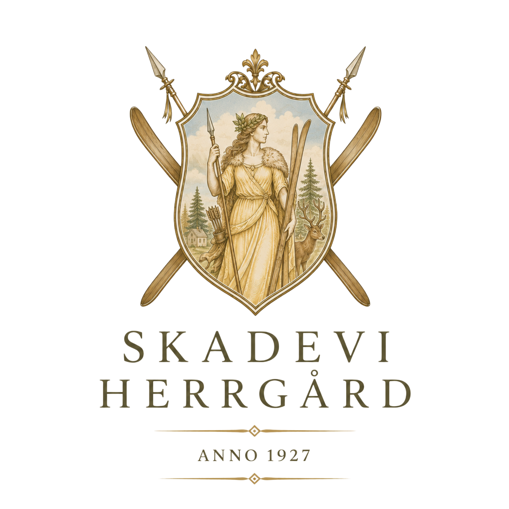

Den stora kvällen
Långbord & tal
Samla alla runt ett dukat bord och låt rummet fyllas av berättelser, skratt och musik.


Samla dem ni tycker om till en helg med skratt, långa middagar och plats för precis den fest ni drömmer om.
Planera er festPå Skadevi Gård kan ni landa innan festen börjar och stanna kvar när kvällen är slut. En privat herrgård för födelsedagar, möhippor, jubileum, dop och allt däremellan.
Här finns friheten att skapa ett firande som känns personligt. Duka långbord i pergolan, laga mat tillsammans eller ta hjälp med catering och musik.

Samla alla runt ett dukat bord och låt rummet fyllas av berättelser, skratt och musik.
Fyll dagen med femkamp, tennis, badtunna och sådant som får alla att släppa vardagen.

Avsluta kvällen utan att tänka på hemresan och vakna till en långsam frukost tillsammans.
Berätta vad ni vill fira, så hjälper vi er att skapa en helg att minnas.
Kontakta oss